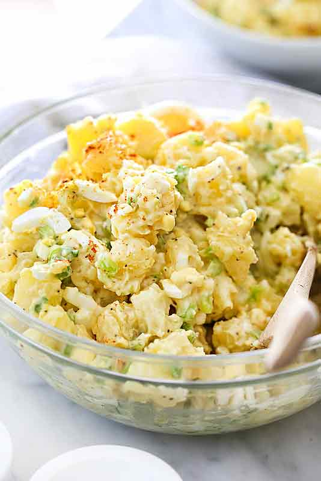

Potato Salad

Description
It may be a pretty bold to claim, but saying this potato salad recipe is the best is a statement I’ll totally stand behind.
This easy, classic Southern potato salad recipe with eggs, has been handed down from my grandma to my mom and then to me, and includes their secret tips that makes it the very best potato salad recipe every single time.
Ingredients
- 6 medium white potatoes or Yukon golds, about 2 1/2 to 3 pounds, skin on and quartered
- 3 tablespoons white vinegar
- 2 celery stalks (ribs), diced
- 6 green onions, diced
- 5 hard boiled eggs, peeled
- 1-1/2 cups Miracle Whip or mayonnaise
- 1 tablespoon yellow mustard
- 1-1/2 teaspoons celery seed
- 3/4 teaspoon kosher salt
- 3/4 teaspoon freshly ground black pepper
- paprika for garnish
Steps
- Add the potatoes to a large pot of cold water and bring to a boil. Reduce the heat to a lightly rolling boil over medium heat and add 1 teaspoon of kosher salt. Cook for 20-25 minutes or until the potatoes are easily pierced with a fork or paring knife. Drain and set aside until cool enough to handle.
- Peel the skins from the potatoes and cut into 1/2" to 3/4" square pieces. Transfer the warm potatoes to a large mixing bowl and sprinkle with the white vinegar. Toss the potatoes with the vinegar and set the potatoes aside to cool, about 15-20 minutes.
- Add the celery and the green onions to the potato mixture. Chop 4 of the hard boiled eggs and add to the potato mixture.
- In a medium bowl, mix the Miracle Whip or mayonnaise, yellow mustard, celery seed and salt and pepper. Fold into the potato mixture and season with more salt and pepper to taste. Slice the last egg into thin slices and place the slices on top of the salad. Sprinkle with paprika if desired. Chill for at least 1 hour or overnight before serving.